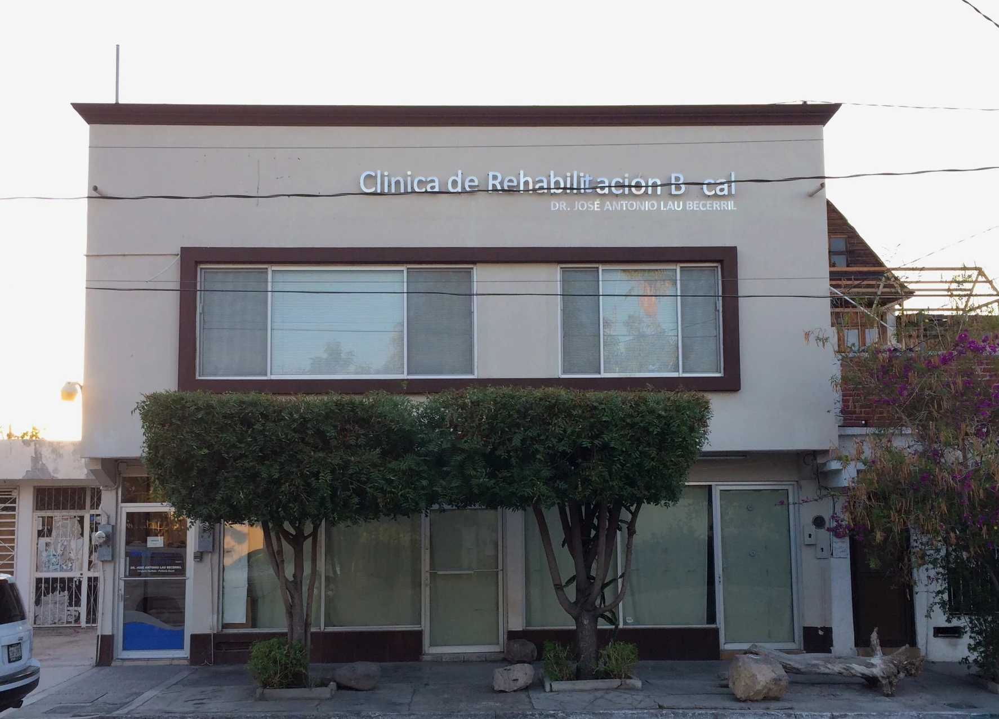
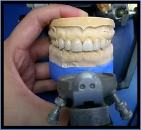
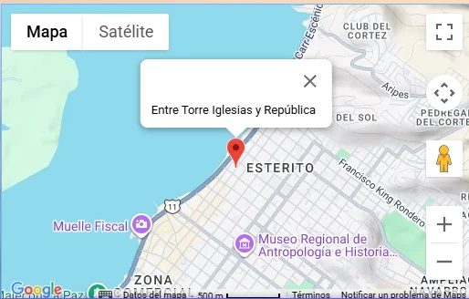

Rehabilitación bucal e implantes
Recupera la función, estética y confianza de tu sonrisa mediante planes personalizados.
CLÍNICA DENTAL FAMILIAR EN LA PAZ
Más de 30 años brindando rehabilitación bucal, implantes, ortodoncia y atención personalizada en La Paz, Baja California Sur.

NOSOTROS
Somos una clínica familiar dedicada al cuidado de la salud bucal desde hace más de 30 años. Nuestros especialistas combinan experiencia clínica, atención personalizada y soluciones pensadas para cada paciente.
Trabajamos para recuperar la función, la estética y la confianza de tu sonrisa con tratamientos responsables y seguimiento cercano.
SERVICIOS
Recupera la función, estética y confianza de tu sonrisa mediante planes personalizados.
Alineamos tu sonrisa con tratamientos para niños, adolescentes y adultos.
Guiamos el desarrollo adecuado de los maxilares durante el crecimiento.
Resinas del color natural para reparar dientes dañados.
Prevención profesional y una sonrisa más saludable y luminosa.
Procedimientos seguros con atención y seguimiento profesional.
DIFERENCIADOR
Contamos con nuestro propio laboratorio dental, lo que nos permite controlar la calidad, mejorar la precisión y agilizar la entrega de tus trabajos.

CASO CLÍNICO REAL
Caso clínico realizado en Lau Dental. Cada tratamiento es personalizado y los resultados pueden variar según las necesidades de cada paciente.
EQUIPO MÉDICO
Cirujano Dentista — UNAM
Especialista en Prótesis Dental e Implantes — UNAM
Cédulas profesionales: 4508361 · 5721373Médico Estomatólogo — UAA
Especialista en Ortodoncia
Cédulas profesionales: 4895698 · 718709VISÍTANOS
Dirección
Madero 685 norte, altos
Colonia Centro, C.P. 23000
La Paz, B.C.S.
Horario
Lunes a viernes: 8am–2pm y 4pm–8pm
Sábado: 8am–2pm
Teléfono: (612) 122 7895
WhatsApp: +52 612 176 8359
